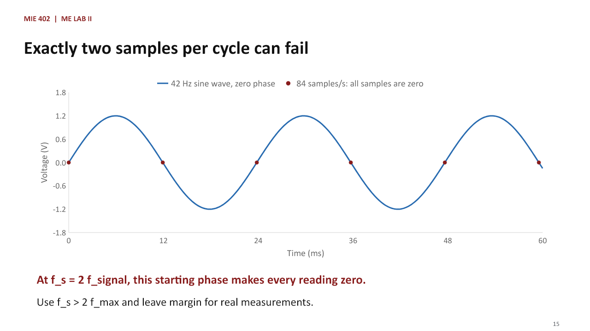
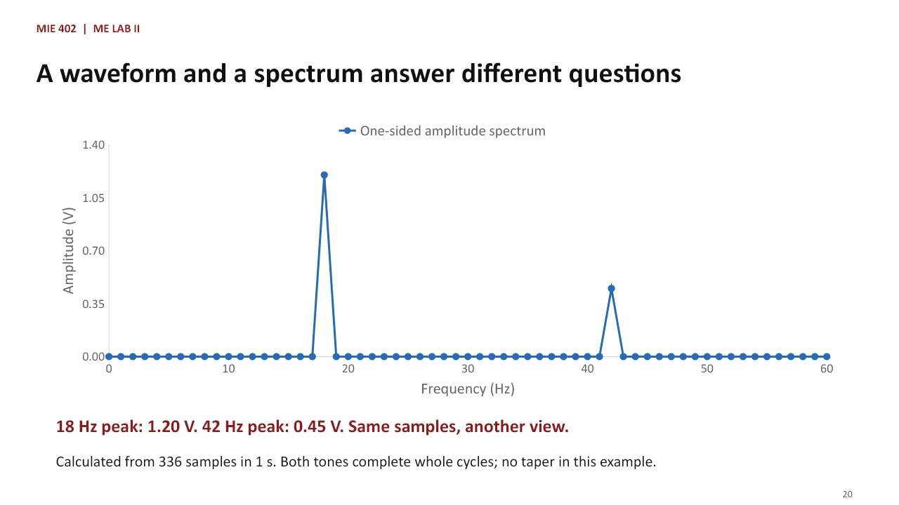
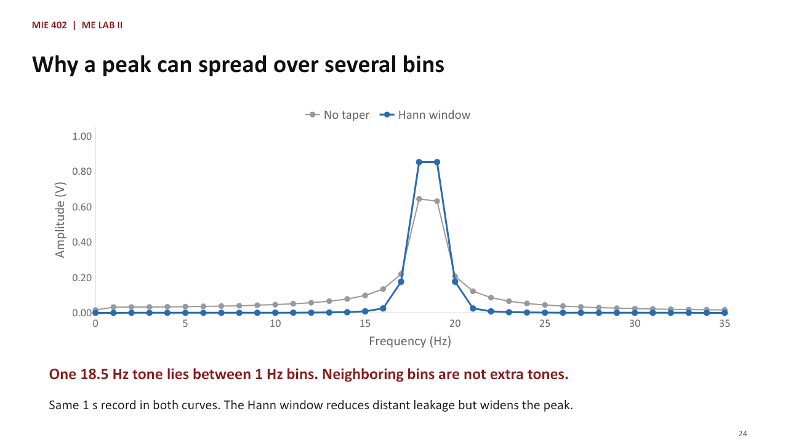

Fall 2026 · 50-minute class
Sampling, FFT, and the
Pre-Lab 1 notebook
Theory and guided data analysis for the first laboratory. All Python code is provided. Students calculate, predict, compare, and explain the results.
Lecture files
31 slides with detailed teaching notes, worked examples, and seven editable charts
Pre-Lab 1 notebook
Prepared analysis cells and a 20-point data-analysis assignment
Sampling, FFT, and the Pre-Lab 1 notebook
Learning goals
- Explain sample rate, sample interval, record length, and Nyquist frequency
- Run prepared analysis cells in a Jupyter notebook
- Interpret time histories, RMS values, and one-sided FFT spectra
- Recognize aliasing before collecting Lab 1 sound data
Connection to Lab 1
PRE-LAB
A known voltage signal contains two pure tones.
Amplitude describes signal size; frequency describes how fast it repeats; phase sets its starting position.
LABORATORY
A microphone converts changing sound pressure into changing voltage.
Moku:Go stores voltage samples. The waveform shows change in time; the spectrum shows the frequencies present.
Jupyter notebook structure
MARKDOWN CELLS
Instructions, equations, and response areas.
Double-click to edit. Use Shift+Enter to render and move forward.
CODE CELLS
Python commands that define variables, calculate results, and make figures.
Run from top to bottom with Shift+Enter.
Opening and saving the notebook
- Download the .ipynb file from Canvas or open it from the course website in Colab
- Save a personal copy before editing
- Run cells from top to bottom
- Keep code outputs and figures in the submitted file
Execution order matters
import numpy as np
A = 1.20
print(A)
# A later cell can use A only after this cell runs.
rms_component = A / np.sqrt(2)
print(rms_component)A sinusoid: what the three parameters mean

The new two-tone signal
A1, f1, phi1_deg = 1.20, 18.0, 25.0
A2, f2, phi2_deg = 0.45, 42.0, -15.0
def signal(t):
return (A1*np.sin(2*np.pi*f1*t + np.deg2rad(phi1_deg))
+ A2*np.cos(2*np.pi*f2*t + np.deg2rad(phi2_deg)))Phase relative to a zero-phase sine wave

Mean and RMS
MEAN
Average signed level:
mean = (1/N) Σ x[n]
N is the sample count; x[n] is sample n.
The continuous one-second signal has zero mean.
RMS
Typical signal size, independent of sign:
RMS = sqrt((1/N) Σ x[n]²)
For these two distinct tones over complete cycles:
RMS = sqrt((A₁² + A₂²)/2) = 0.9062 V
Samples and the underlying waveform

Signal frequency and sampling rate
THE WAVE: f_signal
f_signal counts complete cycles per second.
Unit: hertz (Hz).
Our signal has two components:
f₁ = 18 Hz and f₂ = 42 Hz.
THE RECORDER: f_s
f_s counts stored samples per second.
Unit: samples/s (often written Hz).
We choose this setting on the recorder.
Changing f_s changes the sample times.
Explanation and worked example
Say: We have two different clocks. The first belongs to the wave: how often does the voltage complete a cycle? That is f_signal. The second belongs to the recorder: how often do we store a voltage reading? That is f_s. The letter s means sampling, not signal. In the notebook, fs is the sampling rate, while f1 and f2 belong to the two tones. There is no single f_signal for a two-tone signal; we apply the term to each component. Ask: If I change fs from 126 to 336, does the 42 Hz tone become a 336 Hz tone? No. We get more readings of the same 42 Hz wave. Transition: We can now count how many readings fall within one cycle.
How many samples describe one cycle?
DURATION OF ONE CYCLE
Signal period: T_signal = 1/f_signal.
For 42 Hz: T_signal = 23.81 ms.
Sample interval: Δt = 1/f_s.
For 126 samples/s: Δt = 7.94 ms.
SAMPLES PER CYCLE
Samples/cycle = T_signal / Δt
= f_s / f_signal
126 / 42 = 3 samples per cycle.
336 / 42 = 8 samples per cycle.
Explanation and worked example
Say: The 42 Hz component completes a cycle in about 24 milliseconds. At 126 samples per second, the recorder takes one reading about every 8 milliseconds. Therefore three sample intervals fit in one cycle. Divide the cycle duration by the time between readings to obtain the formula, rather than asking students to memorize it. Check the units: samples per second divided by cycles per second gives samples per cycle. Eight readings give a much clearer drawing than three. For a noninteger ratio, this is the average number of samples per cycle, not a guarantee that every individual cycle contains the same number. Ask students to calculate 72/42 = 1.71 before the next slide.
The Nyquist condition
THE SIGNAL REQUIREMENT
f_max is the highest frequency present.
For our two tones: f_max = 42 Hz.
To avoid aliasing in this signal:
f_s > 2 f_max = 84 samples/s.
THE RECORDER LIMIT
Nyquist frequency: f_N = f_s / 2.
At f_s = 126 samples/s: f_N = 63 Hz.
Both 18 Hz and 42 Hz are below 63 Hz.
The same condition is f_max < f_N.
Explanation and worked example
Say: f_max belongs to the signal. f_N belongs to the selected sampling rate. They are not two names for the same quantity. The sampling theorem tells us that a signal confined to frequencies below half the sampling rate can, in principle, be recovered from ideal uniform samples. For our ordinary real-valued voltage measurement starting at low frequency, we require fs greater than twice the highest frequency present. We use a strict inequality and leave margin in practice. The 42 Hz component is smaller in amplitude than the 18 Hz component, but it still determines the requirement. Ask: At fs = 126, what is f_N? Answer: 63 Hz. Is 42 below it? Yes. Transition: Why do we avoid exactly two samples per cycle?
Exactly two samples per cycle can fail

Explanation and worked example
Say: This example uses a 42 Hz sine wave with zero phase, rather than our assigned two-tone waveform. Sample at exactly 84 samples per second. Every reading lands on a zero crossing, so all stored values are zero. A different starting phase gives different values, which is precisely why the boundary is unsafe for recovering an arbitrary sinusoid. The curve has not disappeared; the recording has missed it. This is a direct reason to write greater than, not equal to, twice the maximum frequency. Meeting the ideal theorem with three samples per cycle also does not mean straight lines between the readings reproduce the waveform. Reconstruction and a visually smooth connected plot are different tasks.
Checking the four notebook sample rates
| f_s (samples/s) | f_N (Hz) | Samples per 42 Hz cycle | Both tones below f_N? |
|---|---|---|---|
| 336 | 168 | 8.00 | Yes |
| 126 | 63 | 3.00 | Yes |
| 72 | 36 | 1.71 | No: 42 Hz aliases |
| 48 | 24 | 1.14 | No: 42 Hz aliases |
Explanation and worked example
Work through the first row with the class. fs = 336 gives f_N = 168 Hz and eight samples per 42 Hz cycle. Both components satisfy the condition. Then ask students to complete the second row: 126 gives 63 Hz and three samples per cycle. For 72, f_N is only 36 Hz, so the 42 Hz component fails even though 18 Hz remains below the limit. For 48, the boundary is 24 Hz and the same high-frequency component fails. Emphasize that we check every component, including smaller ones. These pass/fail labels refer to avoiding aliasing in this ideal known two-tone signal, not to overall measurement quality, noise, calibration or amplitude accuracy.
Aliasing: two waves fit the same samples

Explanation and worked example
Say: Look only at the red points first. These are the readings available to the recorder. The gray 42 Hz wave passes through every red point. The blue 6 Hz wave also passes through every red point. If I give you only these readings, you cannot decide which of these two waves produced them. That ambiguity is aliasing. At fs = 48, the displayed low-frequency interpretation is 6 Hz because 42 exceeds the 24 Hz Nyquist frequency. The source still oscillates at 42 Hz; sampling has lost the information needed to identify it. This plot isolates the second component of our signal. The 18 Hz component remains distinguishable in this case. The alias phase is chosen so both curves agree exactly at the sample times. Taking an FFT cannot recreate the missing information.
Predicting an alias frequency
FIRST CHECK THE LIMIT
Compute f_N = f_s / 2.
If 0 ≤ f_signal < f_N, keep its frequency.
For f_N < f_signal < f_s:
f_alias = f_s − f_signal.
EXAMPLES FROM THIS NOTEBOOK
42 Hz at f_s = 72: f_N = 36 Hz.
f_alias = 72 − 42 = 30 Hz.
42 Hz at f_s = 48: f_N = 24 Hz.
f_alias = 48 − 42 = 6 Hz.
Explanation and worked example
Define f_alias as the frequency that the sampled data appear to contain within the interval from zero to fs/2. Students must check which case they are in before applying subtraction. For these examples, the true frequency lies between fs/2 and fs, so one subtraction works. Do not teach absolute value of f minus fs as a universal rule. For a frequency several times fs, subtract an appropriate integer multiple of fs and reflect into the range zero to fs/2. In general choose an integer k so that abs(f_signal - k fs) is at most fs/2. That general rule belongs in your explanation only if a student asks; the assigned examples need one fold. Ask students why the 18 Hz component stays at 18 Hz in all four cases.
Preventing aliasing during acquisition
- Estimate the highest frequency in the input, including unwanted high-frequency content.
- Choose a sampling rate above twice that frequency, with practical margin.
- An analog low-pass filter reduces unwanted frequencies before sampling.
- After aliasing occurs, an FFT or a smoother plot cannot restore the lost information.
Explanation and worked example
Say: In this notebook we know the input exactly. In the laboratory the microphone can also pick up higher harmonics and background noise. An anti-alias filter is a physical or built-in analog filter before the analog-to-digital converter. It reduces high-frequency input that the chosen sampling rate cannot represent correctly. A real filter has a transition region, so choose margin and follow the acquisition system specifications. A digital filter applied after bad sampling may remove part of a recorded signal, but cannot identify which original high-frequency component produced an alias. Do not imply students should disable instrument protection. Relate this to choosing Moku:Go settings before collecting data.
A waveform and a spectrum answer different questions

Explanation and worked example
Say: The waveform answers what the voltage is doing as time passes. The frequency spectrum answers which repeating components are present. The FFT is an efficient calculation of the discrete Fourier transform. It compares the recorded samples with a set of sinusoidal patterns and returns their contributions. This plot is calculated from the same two-tone signal using 336 samples in one second, with no window taper in this particular teaching example. Both tones complete whole cycles and lie exactly on FFT bins. Therefore the one-sided amplitude spectrum has peaks at 18 and 42 Hz with amplitudes 1.20 and 0.45 V. The graph is not new data; it is another description of the same samples. We will discuss the notebook's Hann window after students can read the axes.
Reading an FFT peak
HORIZONTAL POSITION
The x-axis is frequency in Hz.
A peak at 18 Hz means 18 cycles/s.
This axis is not time.
It is not the recorder sampling rate.
VERTICAL HEIGHT
Here the y-axis is amplitude in volts.
The 18 Hz peak is about 1.20 V.
This is peak amplitude, not RMS.
Its single-tone RMS is 1.20/√2 V.
Explanation and worked example
Point to the 18 Hz peak on the previous figure and ask two separate questions: Where is it? How tall is it? Location gives frequency; height estimates amplitude using the chosen spectrum normalization. This lecture uses a one-sided amplitude spectrum, not a power spectral density. Power density would have different units such as volts squared per hertz. One-sided means showing the nonnegative frequencies for a real-valued time signal; the negative-frequency half contains matching information. The prepared code handles the scaling. Do not ask students to implement the FFT. A wrong sample-rate value used in analysis gives a wrong horizontal frequency axis, so always retain the actual recording rate.
Correct RMS does not guarantee correct frequency
RMS SUMMARIZES SIGNAL SIZE
Square each value, average, then take a square root.
It compresses the record into one number.
It does not say how fast the wave repeats.
THE NOTEBOOK COMPARISON
An aliased record can still have nearly the expected RMS.
Check the waveform and the FFT peaks as well as the mean and RMS.
Explanation and worked example
Say: A thermometer gives one temperature, not a picture of all changes during the day. Similarly RMS gives one measure of signal size, not its frequencies. In our one-second sample records the 42 Hz component can appear at another frequency while its magnitude contribution stays similar. Thus a small RMS percent error is not proof that the sample rate was sufficient. Students should report this explicitly when comparing their results. The theoretical RMS formula assumes the stated distinct tones over a record containing complete cycles. Short records or different sampling relationships need the actual sum or integral rather than blind reuse of that result.
Record duration and FFT frequency bins
THREE ACQUISITION QUANTITIES
N = number of stored samples.
f_s = samples per second.
T_record = N / f_s, in seconds.
T_record is not the period of one wave.
THE FFT FREQUENCY GRID
A bin is one frequency checked by the FFT.
Bin spacing: Δf = f_s / N = 1/T_record.
T_record = 1 s gives bins 1 Hz apart.
T_record = 0.25 s gives bins 4 Hz apart.
Explanation and worked example
Say: The word bin simply means a position on the FFT frequency grid. For a one-second record the frequencies are zero, one, two, three hertz and so on up to the Nyquist boundary. For a quarter-second record they are zero, four, eight, twelve hertz and so on. Define N, fs and T_record before substituting numbers. Distinguish T_record from T_signal: one is how long we record, the other is how long the wave takes to repeat. N samples at times 0 through (N-1)/fs still correspond to an N/fs FFT record duration. We do not add a duplicate endpoint. Ask: Which change gives finer bin spacing, longer recording at fixed fs or only raising fs while keeping record duration fixed? Longer recording.
Why a peak can spread over several bins

Explanation and worked example
Say: Here is a separate teaching example with a single 18.5 Hz tone recorded for one second at 128 samples per second. Its frequency is halfway between the 18 and 19 Hz FFT bins. The transform needs several bins to describe the finite record, so one physical tone produces a spread of spectral values. This is spectral leakage. The blue and gray curves are calculated from identical samples with two different windows. Do not interpret every neighboring nonzero bin as a separate physical tone. The notebook's quarter-second case has a similar issue: 18 and 42 Hz fall between four-hertz bins. Leakage is different from aliasing: leakage spreads a finite-record peak, while aliasing makes distinct input frequencies share the same samples.
What the Hann window changes
SMALLER VALUES NEAR THE ENDS
A window multiplies samples by weights.
The Hann weights taper toward zero at both ends.
This reduces distant leakage around a peak.
A TRADEOFF
The main peak becomes wider.
Amplitude needs a scaling correction.
The provided code applies the correction.
Windowing does not fix aliasing.
Explanation and worked example
Say: Imagine reducing the abrupt jump where the end of the record meets the beginning of the repeated segment used by the Fourier representation. The Hann window does that by gently reducing the endpoint values. On the previous plot, compare the far-away values and the width near the peak. Lower distant leakage helps reveal weaker frequencies, but a wider main peak makes close tones harder to separate. The correction uses the average window weight, often called coherent gain. It adjusts amplitude scaling, but does not guarantee exact peak amplitude for a tone between bins or overlapping another peak. Keep that limit in mind when students compare plot heights.
Sample rate and duration solve different problems
HIGHER f_s AT FIXED DURATION
More readings in each second.
Higher Nyquist frequency f_N = f_s/2.
The FFT-bin spacing stays 1/T_record.
The physical tone frequency stays the same.
LONGER T_record AT FIXED f_s
More cycles of the signal are observed.
Finer FFT-bin spacing Δf = 1/T_record.
The Nyquist frequency stays the same.
The window also affects peak separation.
Explanation and worked example
Use two concrete changes. First keep one second but increase fs from 126 to 336. The highest unaliased frequency boundary rises from 63 to 168 Hz, yet bin spacing remains one hertz. Second keep fs at 336 and increase duration from 0.25 to 1 second. Nyquist stays 168 Hz, while the frequency grid gets finer from four to one hertz. Say explicitly that grid spacing is not a universal guarantee of resolving two close tones: the window shape, noise and relative amplitudes matter. A denser plotted curve made by zero padding also does not add measured information. This comparison prepares students to justify both acquisition choices separately.
Choosing settings for a new measurement
ILLUSTRATIVE DESIGN TARGET
Suppose frequencies extend up to 60 Hz.
We want FFT bins no more than 0.5 Hz apart.
Choose f_s > 120 samples/s.
Choose T_record ≥ 2 seconds.
ONE POSSIBLE CHOICE
f_s = 300 samples/s, T_record = 2 s.
N = 600 samples.
f_N = 150 Hz and Δf = 0.5 Hz.
Check filtering, noise and device limits.
Explanation and worked example
Tell students these are teaching values, distinct from their assigned 75 Hz design question. Start with the desired outcomes and work backwards. The highest expected frequency controls the minimum sample rate; the desired grid spacing controls record duration. A choice of 300 samples per second gives five samples per 60 Hz cycle and leaves margin relative to the ideal threshold, but is not a universal instrument recommendation. Two seconds gives the requested half-hertz bins. Ask students which requirement fails if we shorten the record to half a second: bin spacing becomes two hertz, while the Nyquist limit is unchanged. Ask which requirement fails if we keep two seconds but lower fs to 100: 60 Hz exceeds the 50 Hz Nyquist boundary.
Using the prepared notebook
- Open the course Colab link, save a personal copy, and run cells from top to bottom.
- Read fs and duration before interpreting each figure. The full code is already provided.
- Predict peaks first, then compare them with the printed output and plots.
- Enter calculations and explanations in the response cells. No code writing is required.
Explanation and worked example
Switch to the actual notebook and identify the variables rather than asking students to write them. Point to f1 and f2 as physical signal frequencies, fs as the recording setting, and duration as the observation length. Before running the spectrum, ask students to state fs/2 and their predicted peak locations. Run the cell, then ask them to describe agreement or disagreement using values and units. Show a Markdown response cell and how to render it with Shift+Enter. If the output seems inconsistent, restart the runtime and run all earlier cells. Do not type the students' complete analysis answers. Their work is reasoning about the prepared results.
What a good analysis answer includes
- Name the case: sampling rate, record duration and signal component.
- State a prediction with a calculation, including units.
- Report the observed value and compare it with the prediction.
- Explain the cause: adequate sampling, aliasing, leakage or limited record duration.
Explanation and worked example
Say: 'The plot looks wrong' is too vague. A useful answer tells the reader which component, which settings, the expected behavior and the measured result. For RMS, compute percent error as abs(sample RMS minus theoretical RMS) divided by theoretical RMS times 100 percent, since the theoretical value here is nonzero. For frequency, connect the observed peak with Nyquist and the predicted alias. For duration, compute the actual N/fs before claiming a particular bin spacing. The goal is not to use more technical words. It is to make a clear claim supported by a number and a reason.
Check your understanding
QUESTIONS
1. Does raising f_s change f₁ or f₂?
2. Which quantity equals f_s/2?
3. Can a longer record repair aliasing?
4. What does a peak location tell you?
ANSWERS
1. No, it changes the sampling times.
2. The Nyquist frequency f_N.
3. No, choose adequate sampling first.
4. The frequency represented in the data.
Explanation and worked example
Ask each question before revealing or discussing its answer. For question one, require students to distinguish the physical source from the recorder. For question three, a longer incorrectly sampled record gives more of the same ambiguous information. For question four, add that a peak may represent an alias, so the FFT alone does not prove the original analog frequency. Close by asking students to state the two design rules in words: sample fast enough for the highest input frequency and record long enough for the frequency detail needed. If these distinctions are unclear, return to the two clocks explanation rather than introducing more notation.
Pre-Lab 1 submission
BEFORE SUBMITTING
Run all prepared cells.
Keep all figures visible.
Complete every response section.
Export to HTML or PDF for Canvas.
DEADLINE
Normally posted Monday before the lab.
Submit before your own section begins.
Late pre-labs are not accepted.
Explanation and worked example
Remind students that the different laboratory sections have different start times, so each student's deadline is the start of their own section. The pre-lab is normally posted on the Monday before that laboratory. Students can discuss general approaches, but their submitted explanations and results must be their own. The final file must include readable figures and calculations. This is a data-analysis assignment with complete prepared code. End by pointing students back to the course page and the direct Colab link.
Further reading: Digital Signals Theory: sampling theorem and SciPy spectral analysis tutorial.